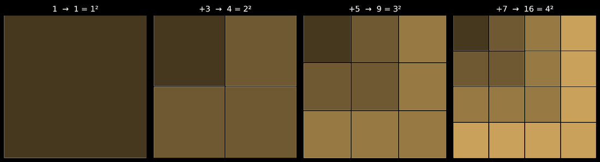
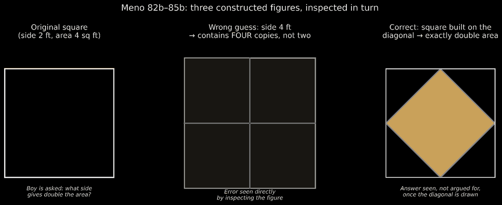
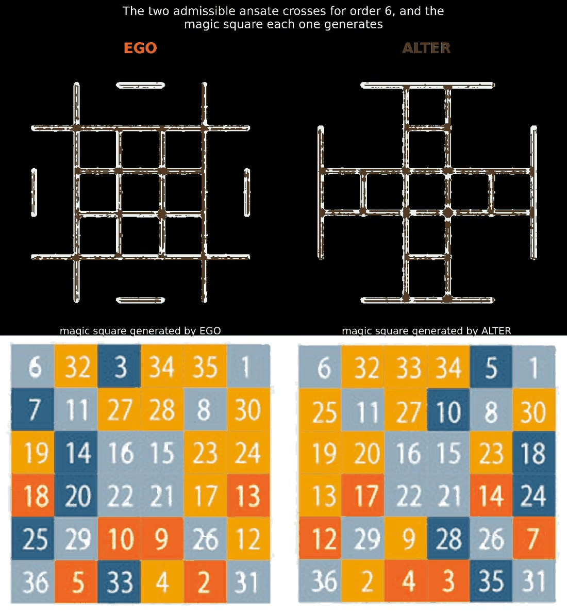

Autres langues : English
La réminiscence : du caillou pythagoricien au carré construit
Par Anibal Edelberto Amiot — Publié le 6 septembre 2026
« Toute chose qui existe possède un nombre, car il n'est pas possible que quoi que ce soit soit connu, ou même seulement imaginé, sans son nombre. »
Il existe une manière très ancienne de faire apparaître une vérité mathématique : ne pas l'énoncer, mais la construire, et laisser celui qui construit la découvrir de ses propres yeux. Cette manière porte un nom grec — anamnèse, réminiscence — et une origine plus ancienne encore, celle des cailloux comptés en figures. Ce texte propose de suivre ce fil sur trois moments : les psephoi pythagoriciens, le garçon esclave du Ménon, et une construction contemporaine de carrés magiques dont l'auteur de ce site est l'inventeur.
Le nombre comme disposition
Les Pythagoriciens comptaient avec des cailloux — psephoi — qu'ils disposaient en figures : triangles, carrés, rectangles. Cette pratique a laissé une trace dans notre vocabulaire mathématique moderne, sous le nom de « nombre figuré ». Mais elle porte quelque chose de plus profond qu'un simple procédé de calcul : pour les Pythagoriciens, arithmétique et géométrie n'étaient pas deux domaines distincts qu'on aurait ensuite mis en correspondance. C'était un seul et même geste — compter, c'était disposer.
Prenons un exemple concret. On pose un caillou. On en ajoute trois autour, disposés pour former un petit carré de quatre. On en ajoute cinq de plus pour obtenir un carré de neuf. Puis sept, pour seize. Chaque couche ajoutée — le gnomon, du nom de l'équerre du charpentier dont elle emprunte la forme en L — ajoute un nombre impair de cailloux (1, 3, 5, 7…), et à chaque étape, le total obtenu est un carré parfait.
Rien, dans la règle suivie, ne mentionnait cette propriété à l'avance. On ne l'a pas démontrée puis vérifiée : elle est simplement apparue, incontournable, dans la forme elle-même, à quiconque venait de la construire. La démonstration et la construction ne faisaient qu'un.

Le garçon esclave et le diagramme
Platon reprend ce même principe, dans le Ménon (82b–86c), pour en faire un argument philosophique. Socrate fait venir un jeune esclave, sans instruction, et lui pose une question : quel côté donne un carré de surface double ? Le garçon répond, avec assurance mais à tort, « le double du côté ». Socrate ne le corrige pas par la parole : il trace ce carré-là, et le garçon voit, de lui-même, qu'il contient non pas deux mais quatre fois le carré de départ. Une deuxième réponse fausse est écartée de la même manière, par construction et inspection, non par argumentation.
Ce n'est qu'alors que Socrate trace la diagonale du carré initial. Le garçon voit, directement, que le carré construit sur cette diagonale possède exactement le double de la surface — la bonne réponse, non pas énoncée mais vue, une fois le bon diagramme sous les yeux.
Platon est explicite sur ce que cette scène est censée démontrer : non pas que le garçon vient d'apprendre la géométrie, mais que cette vérité était déjà en lui, et que les diagrammes n'ont fait que la faire remonter à la conscience. C'est la doctrine de l'anamnèse — la réminiscence.
Ce qui importe ici, indépendamment de toute position sur l'âme ou la connaissance antérieure, c'est la structure : un diagramme, construit pas à pas et inspecté à chaque étape, peut rendre explicite une vérité déjà implicite dans une structure — à la différence d'une preuve, qui avance de prémisses en conclusion par une chaîne de propositions que le lecteur n'a pas à construire lui-même.

Une construction contemporaine : la croix ansée
Cette même logique se retrouve, portée cette fois de façon délibérée, dans une méthode de construction de carrés magiques développée par l'auteur de ce site.
Un carré magique d'ordre 6 relève d'une classe structurelle particulière — dite « paire-impaire » — la plus résistante des trois classes à une règle de construction uniforme. La méthode ici présentée, appelée croix ansée pour la forme qu'elle trace sur la grille, procède en deux temps totalement indépendants, et sans jamais mentionner, à aucune étape, la propriété magique qu'elle va pourtant produire.
Le premier temps ne concerne que des positions : on relie certaines paires de lignes et de colonnes symétriques par rapport au centre, selon une règle qui s'avère forcer un dérangement — une permutation de trois éléments sans aucun laissé à sa place d'origine. Il n'existe alors que deux configurations possibles : EGO et ALTER.
Le second temps ne concerne que des couleurs et des directions : quatre couleurs, quatre sens de remplissage depuis les quatre coins de la grille. Aucune référence, à aucun moment, à la propriété magique du carré.
Et pourtant, une fois la grille remplie, chaque ligne, chaque colonne, chaque diagonale, additionnées, donnent la même constante. Cette propriété n'a été inscrite nulle part par un ajustement arithmétique direct ; elle émerge de la rencontre entre deux règles purement géométriques, l'une sur les positions, l'autre sur les couleurs. Celui qui construit ce carré ne se voit rien démontrer : il le découvre, au moment même où il termine sa dernière case et additionne, pour la première fois, une ligne.

Ce qui est visé, et ce qui ne l'est pas
Ce rapprochement n'a rien d'une extension mystique. Il ne s'agit pas d'affirmer que la construction de la croix ansée « prouve » la doctrine platonicienne de l'âme, ni de suggérer qu'un mécanisme dépassant le raisonnement géométrique ordinaire y serait à l'œuvre. Le mot « réminiscence » est employé ici par analogie structurelle avec son usage dans le Ménon — pas comme une adhésion à la métaphysique qui l'accompagne chez Platon.
Ce qui relie le gnomon pythagoricien, le diagramme de Socrate et la croix ansée, c'est une même structure épistémique : une règle purement spatiale ou combinatoire, énoncée sans référence à la propriété qu'elle va produire, exécutée pas à pas — et la propriété ne devient visible qu'une fois la construction achevée. Ce que le Ménon isole presque par accident, dans le cours d'un dialogue dont l'objet premier n'était pas l'enseignement des mathématiques, peut devenir, aujourd'hui, un principe de conception délibéré.
Pour comprendre les notions évoquées ici — carré magique, croix ansée — consultez le lexique du projet.